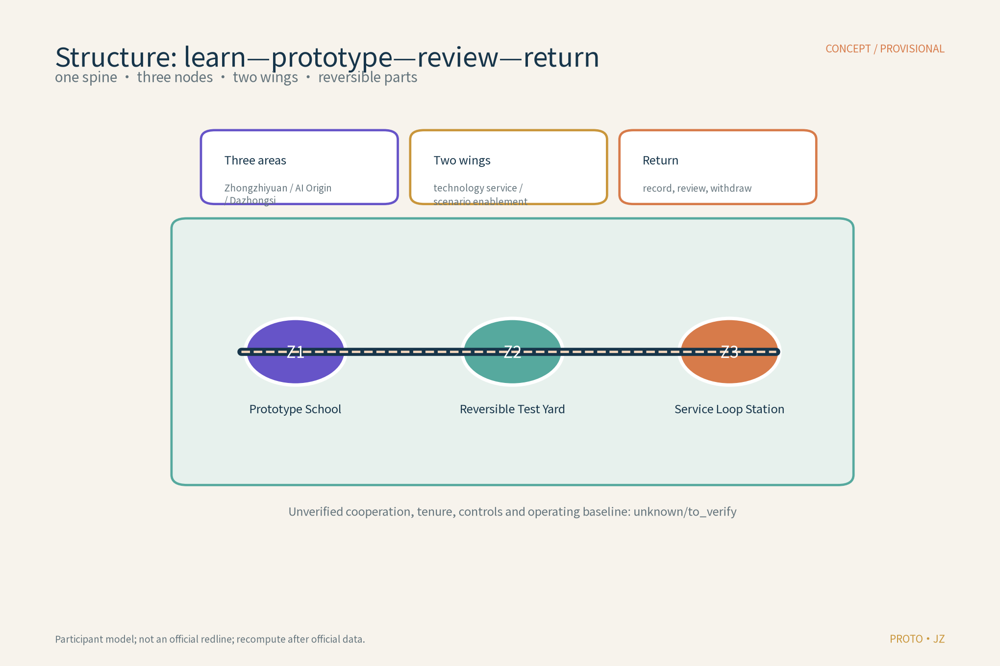
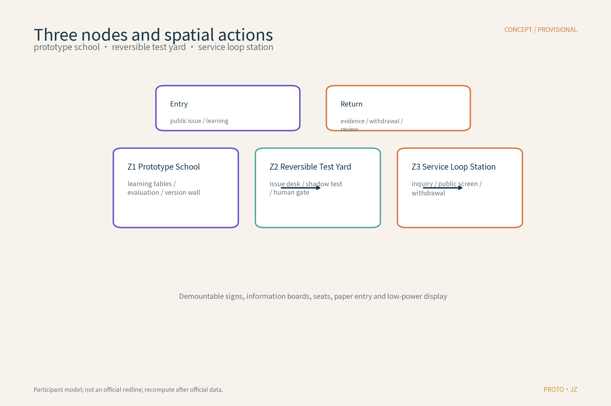
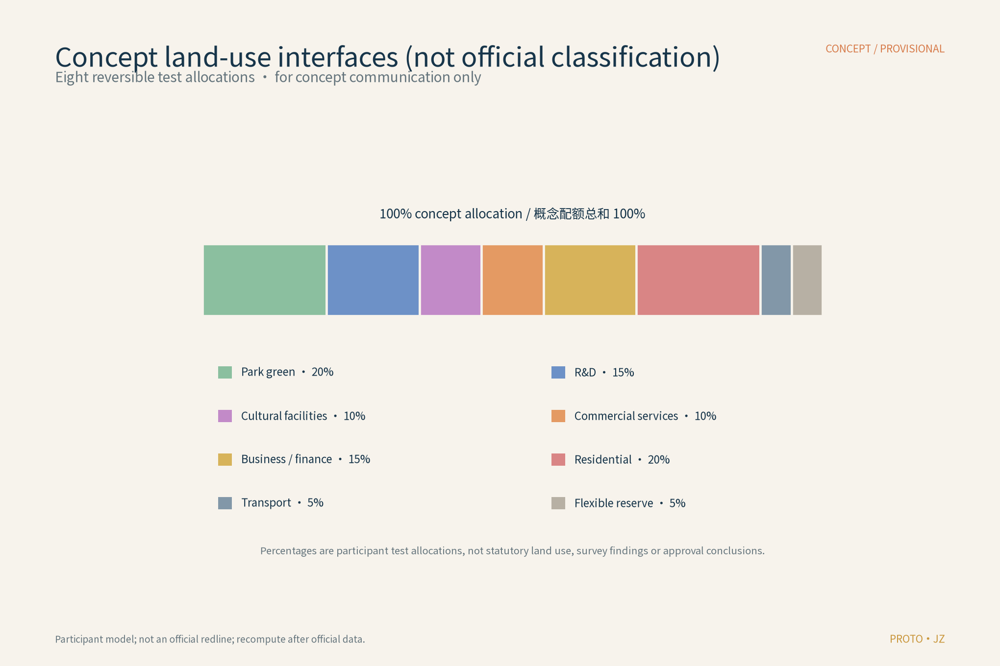
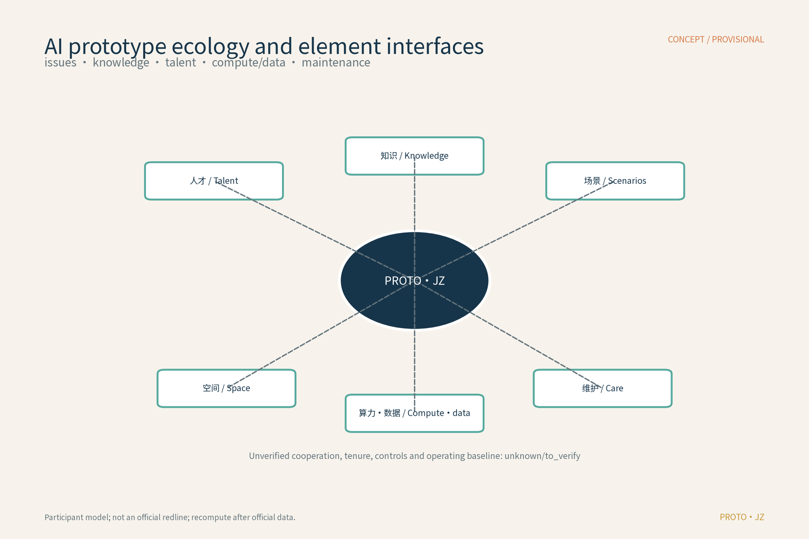
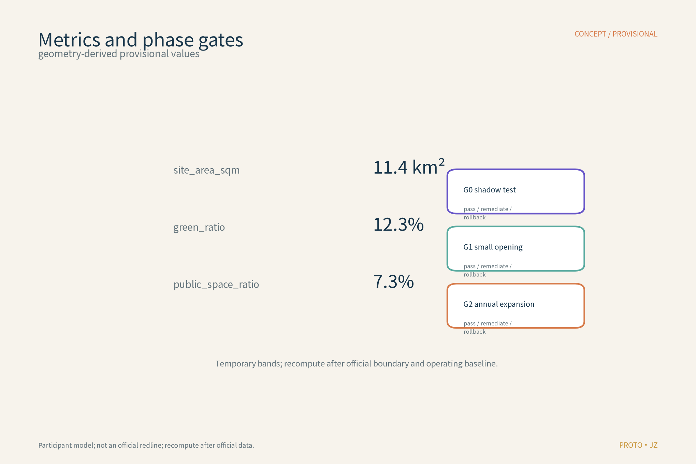

PROTO·JZ Public Prototyping Commons
Learn → prototype → shadow-test → human review → publish/withdraw → return knowledge
Offline visual index; not a statutory plan, approval or professional design.
Three scopes, three positionings, five functions
Strategic research → overall design scope → key-area nodes and Xiaoyuehe test corridor.
Centennial Jing-Zhang cultural belt; metropolitan AI life-experience belt; AI integration innovation belt.
Full-stack autonomy; world-class ecosystem; AI+scenario enablement; lively intelligent city; global AI-governance voice.
Internal three areas, two wings, external interfaces
AI Origin Community | Zhongzhiyuan AI Autonomy Accelerator | Dazhongsi AI Industry Cluster.
Zhongguancun technology-service wing | Xiaoyuehe scenario-enablement wing.
Beiwei Community, Future Science City, Huairou Science City, economic-development zone, Jing-Jin-Ji; no construction or partnership promise.
Three nodes: plan, section, user journey
| Node | Plan boundary | Section/interface | Journey deliverable |
|---|---|---|---|
| Z1 Prototype School | Entry–learning–evaluation–archive | Information board–passage–learning table–mentor position | Submit sample → explain → reproduce → archive |
| Z2 Reversible Test Yard | Issue desk–shadow zone–human gate–return | Passage separated from test face; human bypass | Raise need → try/pause → appeal/exit |
| Z3 Service Loop Station | Inquiry–service–public–withdrawal | Information face separated from passage; no personal display | Choose service → duty review → feedback/opt-out |
Intake → anonymize → model/rule draft → human gate → small test → versioned receipt → publish/appeal/withdraw → revise or exit
AI scenarios, personas and tests
Entry, data minimization, model/rule, human gate, output, responsibility, metric, stop/exit; the model has no final discretion.
S01–S10 each specify space/input, model-to-human gate, output/owner, metric and stop condition.
P1 anonymization, P2 human review/reproducibility, P3 accessibility/offline service; samples, baselines, bands, records, owners and exits are specified.
Low-digital-literacy/older residents; access-needs residents and caregivers; children/students; community workers; engineers/developers; merchants/visitors.
Core metrics
Visual figures





Task coverage, sources and assumptions
Formal agent.1–6, 13 review dimensions, matrix evidence, source boundaries and the rights ledger are recorded in report/narrative.md, compliance_matrix.json, design_depth_matrix.json, sources.json and report/copyright_statement.md.
unknown/to_verify.Self-check status
Static offline HTML only: no remote font, script, map tile, analytics or tracking. Formal four-gate results are persisted in self_check.json; font and asset-rights status are in the rights ledger.